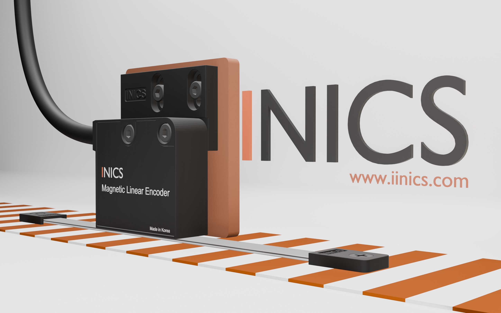

A non-contact magnetic linear incremental encoder — a read head
scanning a magnetic scale. 1 µm resolution and 1 µs response for
precise linear positioning in CNC and semiconductor equipment.

Product Video
1 µM
Min. Resolution
1 µS
Response Speed
±1 INC
Repeatability
IP67
Protection Rating
Key Features
FEATURE 01
Non-Contact Magnetic Scanning
A read head scans the magnetic scale without contact — no mechanical
wear, and stable operation in dust, oil and moisture where optical
types struggle.
FEATURE 02
Resolution Line-up (4x mode)
Seven resolutions from 1 µm to 50 µm cover ultra-precision stages
through general transfer axes, with ±1 increment repeatability.
FEATURE 03
4 Output Types
Choose the output to match the controller. Line driver provides
differential A/A̅/B/B̅ for long runs and noisy environments.
TOTEM POLENPN O.CVOLTAGELINE DRIVER
FEATURE 04
1µs Response · A/B Quadrature
1 µs response (2 µs for NPN) with clean A/B quadrature and ≥25 µs
edge separation — direction sensing and x4 high-resolution counting.
FEATURE 05
IP65/IP67 · 50G Shock Resistance
IP65/IP67 options, 50G shock and 5G vibration. The PA66-GF30 housing
is rigid, lightweight and resistant to oil and fuel. CE certified.
FEATURE 06
Easy Installation Kit
Bracket, spacer, bolts and a 1.0 mm gap-setting stick are included.
Set the head height with the stick, remove it, done. Magnetic scale
and cap available as options.
Technology · Sensing Principle
Magnetic Scale + Read Head
Reading Waves of Magnetic Poles, Engraved in µm
The read head travels without contact over a magnetic scale magnetized with alternating N and S poles at a fixed pitch, sensing the change in magnetic field. The signal is output as A/B quadrature pulses that convey both travel distance and direction.
Non-contact, wear-free — scale and head never touch, so there is no service-life limit.